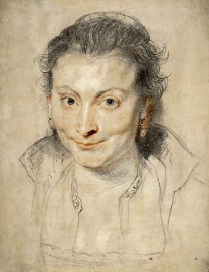

|
Peter
Paul Rubens (1577-1640)

Rubens was born in Siegen in Germany (Westphalia) in 1577. His father,
a courtier, died in 1578 and the family returned to their native
Antwerp. There Rubens trained under three artists, Tobias Verhaecht,
Adam van Noort and probably also Otto van Veen. In 1598 he was registered
as an independent master in the Antwerp Guild, but left for Italy
in 1600. He remained there until 1608, receiving employment from
the Gonzaga family in Mantua, and working extensively in Rome and
Genoa. He also visited Spain in 1603. By the time he returned to
Antwerp, he had established his reputation as a leading painter,
and had studied antique and Renaissance works of art assiduously.
Left:
Portrait of Isabella Brant, coloured
chalks, 1622
381 x.295 mm, PD1893-7-31-21 (Hind 92)
In Antwerp from
1609, he rapidly became the most favoured painter at the court of
Archduke Albert, confirming his stature as an artist with his great
altarpieces of the Raising of the Cross and the Descent
from the Cross for Antwerp Cathedral (where they still hang).
In 1609 he married Isabella Brant (d.1626), of whom there is a drawing
in the Museum's collection, and from 1612 began to design book illustrations
for the Plantin Press in Antwerp. His contact with the English court
began in 1612, when he painted the portrait of the Earl of Arundel,
and in 1618 Rubens acquired a collection of antique statues from
Sir Dudley Carleton, British Ambassador at The Hague. In the 1620s
he was to work for Charles I and the Duke of Buckingham.
By 1620, commissions
came his way in large quantities from many parts of Europe, and
he employed a growing team of pupils and assistants to collaborate
on his paintings. Knowledge of his style was also disseminated by
engravings made afer his paintings by professional printmakers working
under his supervision. In
1630, four years after the death of Isabella Brant, Rubens married
the sixteen-year-old Hélène Fourment. In 1635, he
bought a country house, the Château de Steen, near Malines,
where he spent much of his time during the last ten years of his
life, the grounds inspiring several landscape paintings.
Drawing was
a fundamentally important activity for Rubens, both in devising
his own compositions and for recording the antique and Renaissance
masters he admired. The British Museum contains a superlative collection
of some eighty drawings by him, as well as forty drawings from his
so-called 'Costume Book', an early compilation of study material
from various sources, and a series of rapid sketches after antique
coins. They were all exhibited, together with loans from other collections,
at the British Museum in 1977 (see below for catalogue).
Among Rubens's
Flemish pupils, collaborators and followers, the Museum has drawings
by Anthony Van Dyck (an important collection), Abraham van Diepenbeck,
Jacob Jordaens, Erasmus Quellinus, Cornelius Schut, Frans Snyders,
Theodor van Thulden, Lucas van Uden and Lucas Vorsterman.
Only one print,
an etching of St. Catherine of Alexandria, is believed
to be by Rubens himself, although the attribution is uncertain.
The Museum has impressions of this print, as well as a large series
of the reproductive engravings made after his designs and under
his supervision. These are kept together with other reproductions
of his work and arranged according to the catalogue by C.G. Schneevogt
of 1873. Among the more important printmakers who worked for Rubens
are Paul du Pont (Paulus Pontius). Schelte à Bolswert, Pieter
Soutman and the woodcut specialist, Christoffel Jegher.
Other
Collections
| London
|
Courtauld
Institute Galleries |
| |
National
Gallery |
| |
Wallace
Collection |
| UK |
Ashmolean
Museum, Oxford |
| |
Fitzwilliam
Museum, Cambridge |
| USA |
Metropolitan
Museum, New York |
| |
National
Gallery of Art, Washington |
| |
Pierpont
Morgan Library, New York |
Further
Reading
Burchard, L.
and d'Hulst, R.A. Rubens Drawings. 2 Vols. Arcade, 1963
Held, J.S. Rubens:
Selected Drawings. 2 Vols. Phaidon , second edition 1986
Hind, A.M. Catalogue
of Drawings in the British Museum Vol.II Drawings by rubens, Van
Dyck and Other Artists of the Flemish School of the XVII Century.
British Museum, 1923
Rowlands, J.K.
Rubens: Drawings and Sketches. British Museum Publciations,
1977
White, C. Peter
Paul Rubens. Yale University Press, 1988
The Corpus
Rubenianum Ludwig Burchard, a series of volumes cataloguing
Rubens's work according to particular types, is still in progress.
|